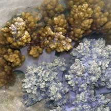
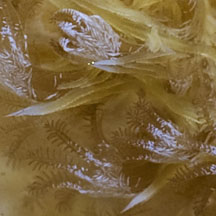
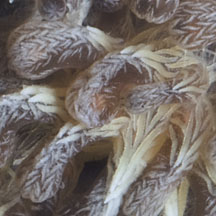

|
|
| soft corals text index | photo index |
| Phylum Cnidaria > Class Anthozoa > Subclass Alcyonaria/Octocorallia > Order Alcyonacea |
| Flowery
soft corals Family Nephtheidae updated Nov 2019
Where seen? Flowery soft corals are commonly seen on many of our shores. They are usually attached to hard surfaces including boulders, jetty pilings and coral rubble. Features: Colonies are usually 15- 20cm in diameter but may be larger. When submerged, these soft corals look like bushes. The common tissue is generally rubbery, stiff and rough to the touch. A thick 'main trunk' attaches to a hard surface on one end, with many small branches on the other end. Only one kind of polyp (autozooids) usually clustered at the tips of the colony's 'branches'. Polyps are tiny (0.5cm or smaller) and have eight short tentacles with 1 row of fine branches. The polyps can be closed but cannot be retracted. The polyps may be white, beige or other colours such as purple. In some, the polyps are supported by large spindle-shaped sclerites (tiny spikes of calcium carbonate) that stick out of the common tissue and gives the colony a spiky, prickly look. Sclerites may also be embedded in the fleshy supporting tissues that forms the 'stem' or 'branches'. The sclerites are often brightly coloured. Flowery soft corals come in a variety of colours from pink, red, orange to purple, blue, brown, yellow and white. Some species can be abundant in areas with fast but one-way flow of water. But they are not often found in areas exposed to strong waves. They can also grow in murky areas. The fire anemone (Actinodendron sp.) looks similar to a flower soft coral. Unlike the soft coral, however, the anemone has a powerful sting. So be careful! Flowery babies: Some species reproduce by dropping a branch. Others may drop polyp bundles. These may settle down and become attach to a surface and start growing as a new colony. This is called 'polyp bail-out'. |
 When the brown polyps are retracted, the colony can appear different. Pulau Hantu, Apr 04 |
 Polyps tiny with eight branched tentacles. Pulau Hantu, Jan 12 |
 Polyps reinforced with large sclerites. Tuas, Dec 11 |
| What do they eat? Some flowery
soft corals harbour microscopic, single-celled symbiotic algae (zooxanthellae)
within their bodies. The algae undergo photosynthesis to produce food
from sunlight. The food produced is shared with the host, which in
return provides the algae with shelter and minerals. Other flowery soft corals don't have zooxanthellae and gather edible bits from the water. Generally, those with zooxanthellae tend to be brown or have other boring dull colours. Flowery friends and frenemies: Many kinds of small animals may be found on flowery soft corals. Some like tiny transparent shrimps, snapping shrimps, porcelain crabs, brittle stars probably just find shelter within the branching arms of the soft coral. Others, like false cowries, eat the soft corals! |


 Tiny colourful brittle star and tiny orange brittle star Chek Jawa, Oct 16 In Spiky flowery soft coral |


| Human uses: Soft corals protect
themselves with unusual substances that are being studied for possible
anti-cancer properties. These beautiful and delicate animals are also
harvested from the wild for the aquarium trade. Collection methods
usually harm the soft coral and other marine life and many specimens
die before they even reach the retailer. Many more die in home aquariums
due to lack of proper care. Living coral reefs, however, are worth
far more to humans when they left alone. Reefs bring in tourists which
generate business beyond the shore (e.g., hotels, restaurants and
travel-related industries). Status and threats: None of our flowery corals are listed among the endangered animals of Singapore. However, like other creatures of the intertidal zone, they are affected by human activities such as reclamation and pollution. Trampling by careless visitors, and over-collection by hobbyists also have an impact on local populations. |
| Some Flowery soft corals on Singapore shores |


| Family
Neptheidae on Singapore Shores Wee Y.C. and Peter K. L. Ng. 1994. A First Look at Biodiversity in Singapore. *from Erhardt, Harry and Daniel Knop. 2005. Corals: Indo-Pacific Field Guide. +from our observation.
|
|
Links
References
|